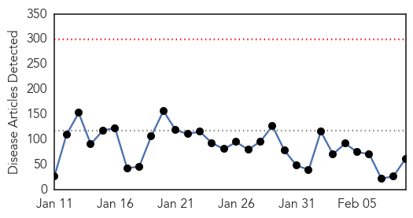
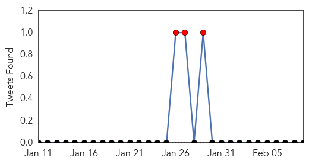
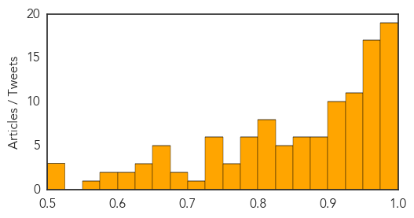

Ebola
30-Day Web Trend
0 alerts, 0 warnings

30-Day Twitter Trend
3 alerts, 0 warnings

Article Locations

Article Confidences

Top Articles:
- 1.000
- Ebola threatens economic gains in affected countries
- 1.000
- Ebola threatens economic gains in affected countries
- 1.000
- Researchers study epidemiology of Ebola Virus Disease to prevent future disease outbreaks
- 0.999
- What Ebola Teaches Us About Public Health In America
- 0.999
- Filipino doctors back from Africa want OFW ban, quarantine to stay
- 0.999
- Researchers fear Ebola virus has mutated and are studying contagion degree — MercoPress
- 0.998
- Guinea to expand use of experimental anti-Ebola drugs
- 0.997
- 'Fear, instability made it difficult to control Ebola in Africa'
- 0.997
- Every Single Kid Who Was Orphaned By Ebola In Guinea Now Has A Home
- 0.997
- The Coca-Cola Africa Foundation continues its Ebola relief efforts through clean water access
- 0.997
- Experimental anti-Ebola drug approved for wider use in Guinea
- 0.996
- 21-day quarantine for OFWs from Ebola-hit countries stays
- 0.995
- After The Worst In Liberia And Sierra Leone
- 0.994
- Togolese President Pays Solidarity visit to Sierra Leone
- 0.993
- Ebola quick test from Germany
- 0.993
- Guinea approves wider use of Ebola drug
- 0.992
- DOH stands pat on 21-day Ebola quarantine
- 0.989
- Ebola survivors clinic to be established « Awoko Newspaper
- 0.988
- Last mile in fight against Ebola will be the hardest says senior UN relief official
- 0.983
- Twists, turns, eventually lead to promising Ebola vaccine
- 0.983
- Twists, turns, eventually lead to promising Ebola vaccine
- 0.982
- Twists, turns eventually lead to promising Ebola vaccine
- 0.981
- Sierra Leoneans in Australia donate to Salone government
- 0.980
- Md. local governments lax in learning about open meetings
- 0.980
- Inmate at center of Baltimore jail scandal gets 12 years
- 0.980
- RadioShack will close 15 Baltimore-area stores by March 31
- 0.971
- As Ebola fades, questions arise over billions in US aid
- 0.969
- Ebola Vaccine Trials Can Offer 'Signs Of Hope'
- 0.961
- National
- 0.961
- US Nurse donates 40ft container OF medical supplies to fight Ebola « Awoko Newspaper
- 0.951
- Chinese executes business tycoon linked to murder
- 0.951
- Sierra Leone News: China trains 5,000 Community Leaders in Sierra Leone
- 0.951
- 21-day quarantine for OFWs from Ebola-hit countries stays
- 0.951
- Reinvigorating the Fight
- 0.951
- China Gives U.S.$2 Milion Ebola Food Aid
- 0.951
- Liberia: U.S$90 Million Petroleum Accord Signed
- 0.951
- China provides food aid to Ebola-hit Liberia
- 0.951
- In South Sudan, senior UN official says 'no doubt' rights violations are ongoing
- 0.946
- Chancellor pledges $50m to help countries fighting Ebola
- 0.931
- Connaught Hospital is fully functional « Awoko Newspaper
- 0.930
- Britain pledges millions to new Ebola fund
- 0.930
- My job is to help stop Ebola horror « Express & Star
- 0.916
- LIBERIA: Togolese President Faure Gnassingbe,ECOWAS’ President Kadré Ouédrago Pay One-Day Visit
- 0.898
- How a New York Psychologist and an Israeli Humanitarian Organization Are Helping Sierra Leone Stand Up to Ebola (INTERVIEW)
- 0.897
- Time's 'person of the year' feels kinda lost
- 0.866
- Time's 'Person Of The Year' Is Feeling Kinda Lost
- 0.831
- Violent protests in Ebola-hit Guinea after imam's arrest
- 0.805
- ECOWAS vows efforts to resume flights to Sierra Leone
- 0.798
- Secretary-General Appoints Bintou Keita of Guinea Ebola Crisis Manager for Sierra Leone
- 0.792
- Sierra Leone News : WHH Provides food and Non-food items to Quarantined Homes at Peninsular Area: Sierra Leone News
Showing top 50 articles...
Top Tweets:
- 0.921
- Twists & Turns Lead To Promising Ebola Vaccine - CBS Local http://t.co/un0wUb9iVd ebola EVD
- 0.900
- Sierra Leone's Ministry of Health recorded 19 new cases of Ebola at the weekend. Declining figures, but the battle continues.
- 0.898
- Twists, turns, eventually lead to promising Ebola vaccine - U.S. News & World Report http://t.co/3YpKl4R2wp ebola EVD
- 0.896
- After Ebola: See Life Returning to Normal in Liberia - TIME http://t.co/xkuREx7Yk6 ebola EVD
- 0.885
- Ebola Update: 22,525 confirmed, probable and suspected cases in 3 most affected countries, with 9,004 deaths. EbolaResponse
- 0.861
- German drugmaker Stada to launch rapid test for Ebola - Reuters http://t.co/sUzl019UAw ebola EVD
- 0.861
- German drugmaker Stada to launch rapid test for Ebola - Reuters http://t.co/EquMmHeTnZ ebola EVD
- 0.854
- Persevering past roadblocks to build promising Ebola vaccine - Yahoo News http://t.co/IvjQpGQcYk ebola EVD
- 0.831
- Ebola On The Ground: Ebola Deeply and OkayAfrica at Sierra Leone’s Epicenter http://t.co/ZIHTpIxJzb via
- 0.814
- Twists, Turns, Eventually Lead to Promising Ebola Vaccine - ABC News http://t.co/uxv2sU0fFt ebola EVD
- 0.814
- Twists, Turns, Eventually Lead to Promising Ebola Vaccine - ABC News http://t.co/ZtfyWoGs4K ebola EVD
- 0.814
- Twists, Turns, Eventually Lead to Promising Ebola Vaccine - ABC News http://t.co/LM7e9B4wPO ebola EVD
- 0.802
- Guinea's Health Minister Says Ebola Situation 'Improving' Via http://t.co/YUlzbVgaic
- 0.799
- Burnings, Bombings, Ebola: Not All Dramatic Events Are Game-Changers - Daily Beast http://t.co/l7jZu1pq3X ebola EVD
- 0.799
- Burnings, Bombings, Ebola: Not All Dramatic Events Are Game-Changers - Daily Beast http://t.co/fBgRqsRzLb ebola EVD
- 0.799
- Burnings, Bombings, Ebola: Not All Dramatic Events Are Game-Changers - Daily Beast http://t.co/Snw61HQ3Vx ebola EVD
- 0.799
- Burnings, Bombings, Ebola: Not All Dramatic Events Are Game-Changers - Daily Beast http://t.co/J4hcoWAzcV ebola EVD
- 0.799
- Burnings, Bombings, Ebola: Not All Dramatic Events Are Game-Changers - Daily Beast http://t.co/BnIMDxwhn9 ebola EVD
- 0.799
- Burnings, Bombings, Ebola: Not All Dramatic Events Are ?Game-Changers? - Daily Beast http://t.co/N0mPQCyBps ebola EVD
- 0.788
- Part 3 in our Sierra Leone Ebola series with follows medical students who join a surveillance team http://t.co/9Z9NLVLDp3
- 0.773
- Government pledges nearly £33m to new Ebola fund - BBC News http://t.co/oGkHvePptK ebola EVD
- 0.742
- As Ebola fades, questions arise over billions in US aid - Fox News http://t.co/yenkGpd9cb ebola EVD
- 0.742
- As Ebola fades, questions arise over billions in US aid - Fox News http://t.co/ueTAt5xYKk ebola EVD
- 0.742
- As Ebola fades, questions arise over billions in US aid - Fox News http://t.co/Yz3uMivIlr ebola EVD
- 0.742
- As Ebola fades, questions arise over billions in US aid - Fox News http://t.co/HsTScDbVvQ ebola EVD
- 0.638
- A photographer documents Ebola’s deadly spread. http://t.co/qkAg5oxNUJ Via
- 0.626
- Via: To Get To Zero Ebola Cases, It'll Cost A Lot: Roughly $1.5 Billion http://t.co/RRizOAxizO Ebola Ebolaresponse Ebolaoutbreak
- 0.626
- RT: Ebola On The Ground, Part 3: The Ebola Surveillance Team: http://t.co/k5Bm1AiT69 http://t.co/GPTuFcIIcp
- 0.542
- RT: This is brilliant & @okayafrica produce on-the-ground ebola reporting from Sierra Leone 2 min video https://t.…
- 0.529
- CDC has updated U.S. guidance on lab testing for assessment & care of patients for whom Ebola is a concern. http://t.co/5n4oJLnVom
Measles
30-Day Web Trend
21 alerts, 4 warnings

30-Day Twitter Trend
5 alerts, 0 warnings

Article Locations

Article Confidences
Top Articles:
- 0.996
- 121 Cases in 17 States and D.C.
- 0.994
- Measles cases turn attention to bounty of childhood vaccines
- 0.992
- 121 Cases in 17 States and D.C. – WebMD
- 0.991
- Montgomery County Health Department provides facts on measles
- 0.990
- Measles parties making a comeback
- 0.988
- Three more confirmed cases of measles in Cook County
- 0.986
- Maine Prepared for Possibility of Measles
- 0.985
- Testing shows 4 of Toronto's measles cases not linked to Disneyland outbreak
- 0.985
- Measles Parties Are Not Recommended by Officials
- 0.985
- Measles cases at Chicago-area day care center rise to 5
- 0.984
- Is it too late to get a measles vaccination?
- 0.984
- Stay Away From "Measles Parties"
- 0.983
- Georgia's got measles; first confirmed case since 2012, health officials say
- 0.981
- Five Children At Illinois Daycare Diagnosed with Measles Growing Your Baby
- 0.980
- Why Measles May Be Back For Good
- 0.979
- Measles Outbreak, Measles Vaccine
- 0.979
- Georgia has first measles case since 2012 as nationwide total rises to 122 in 18 states
- 0.978
- Measles Outbreak Swells to 121 Cases this Year, CDC Says
- 0.978
- Vaccination issue raises debate
- 0.973
- Ottawa daycare is promising a ‘vaccine-free environment’ for kids. Public Health is not happy about it
- 0.972
- An outbreak of misinformation
- 0.971
- First confirmed case of measles in Georgia since 2012 reported in Atlanta
- 0.971
- The Durango Herald 02/09/2015
- 0.969
- Infant in Georgia diagnosed with measles
- 0.968
- Breaking News and Opinion Mareeg.com
- 0.968
- Babies at suburban day care diagnosed with measles
- 0.967
- More than Half Sickened by Measles Outbreak in Calif. are Adults
- 0.967
- Infant In Georgia Diagnosed With Measles
- 0.965
- CDC very concerned about potential for large measles outbreak
- 0.964
- First confirmed case of measles in Georgia since 2012 reported
- 0.964
- California warns against intentional measles exposures
- 0.957
- 5 things to know about measles
- 0.956
- Parents being urged to get their children vaccinated
- 0.954
- Councilman Fagan spreads vaccine conspiracy; blames illegal immigrants
- 0.953
- California warns against intentional measles exposures
- 0.951
- California confirms 107 measles cases, 39 from Disneyland outbreak
- 0.947
- Georgia sees first case of measles since 2012
- 0.943
- Docs Warn Parents: Stay Away from 'Measles Parties'
- 0.943
- One-day-only measles clinic opens after exposure at Toronto West End YMCA daycare
- 0.942
- GA reports first measles case since 2012
- 0.939
- University does not require U.S.-born students to be vaccinated against measles
- 0.938
- Chicago-Area Measles Cases Put Spotlight on Day Care Centers
- 0.933
- First case of measles in Georgia since 2012
- 0.931
- Gupta: 97% immunization rate has W.Va. ready for measles outbreak
- 0.931
- Docs Warn Parents: Stay Away From 'Measles Parties'
- 0.929
- Illinois KinderCare Now Has Six Infants, One Adult Infected with Measles
- 0.927
- California measles outbreak: 123 cases, latest is in Solano County
- 0.920
- CDC: Year's worth of measles cases reported in January
- 0.918
- Lab results negative for potential measles case in Lancaster County
- 0.916
- Amid measles outbreak, all Aspen schools report high vaccination rate
Showing top 50 articles...
Top Tweets:
-
No tweets found for Feb 09, 2015